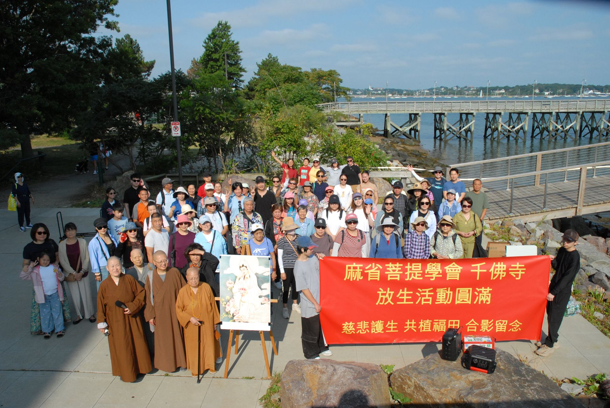
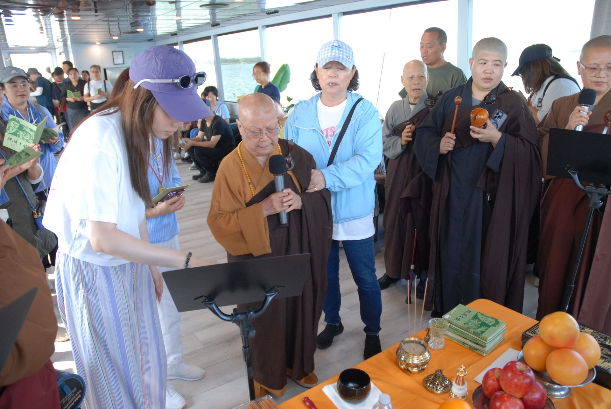
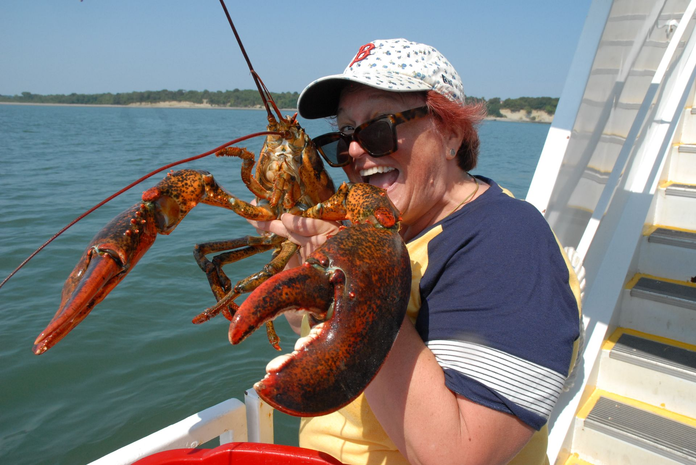
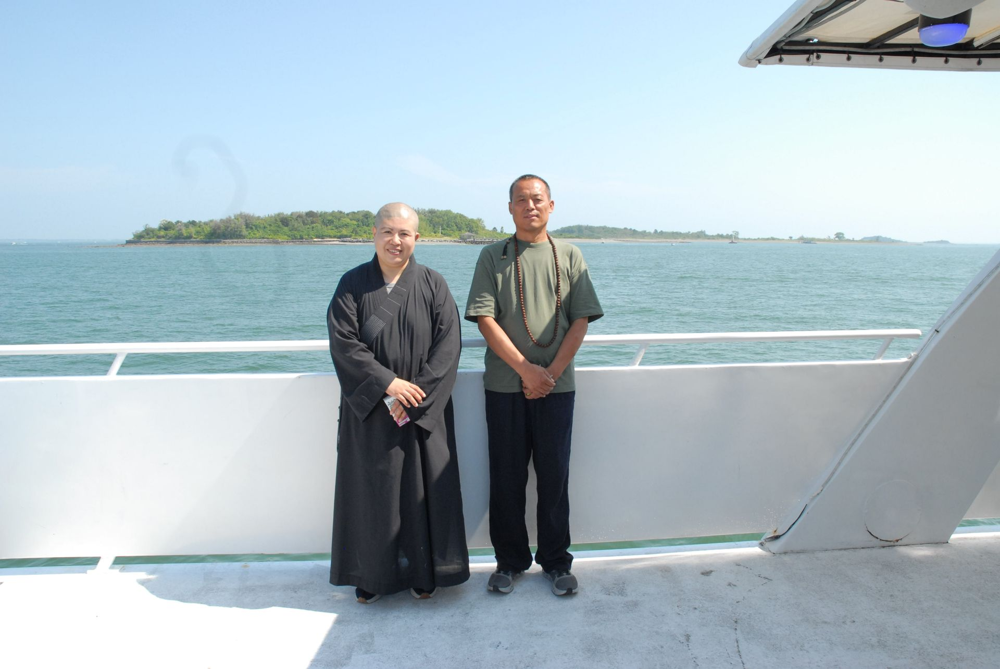
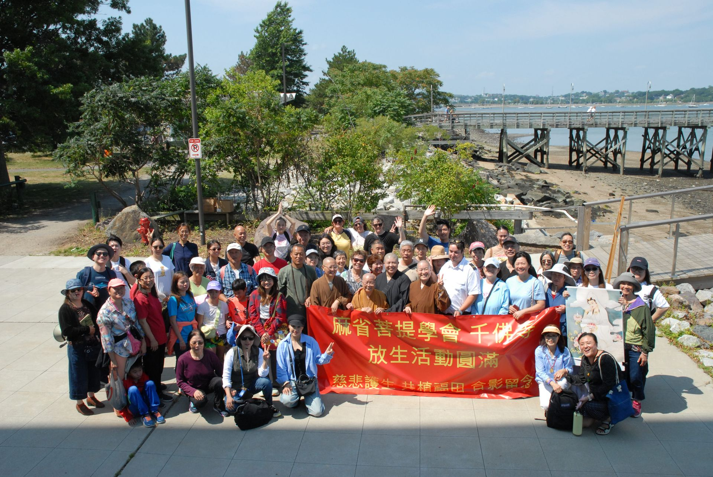

Boston Thousand Buddha Temple Holds Marine Life Release Activity
Zhenjun Sun · August 17, 2025
Promoting the Spirit of Compassion and Praying for All Beings to Attain Happiness
On August 17, 2025, the Thousand Buddha Temple in Boston organized a significant marine life release event. That morning, nearly a hundred devotees from Boston and surrounding areas gathered at the Quincy ferry terminal in Massachusetts to practice the Buddhist concept of compassion on the sea, praying for world peace and the happiness of all beings.

Boarding and Chanting for Merit
At 10:00 AM, the event officially began. Participants boarded the ferry and settled in. As the ferry slowly departed, Master Kuan Hsien led everyone in chanting. The pure and melodious sound of the Buddha's name echoed across the deck, blending with the sea breeze and waves, creating a solemn atmosphere. During the chanting, the Master guided the devotees to dedicate the merits of the day's release to all Buddhas and Bodhisattvas, praying for their compassionate protection so that all beings may be freed from suffering and find peace.

Compassionate Release, Protecting the Ocean
As the boat reached the deeper parts of the bay, the core part of the event—the release—began. Master Kuan Hsien first recited prayers for the creatures, offering compassionate words and wishing for their freedom and return to nature. Then, participants gently released lobsters, crabs, and small clams into the sea.
The devotees, upholding the Buddhist teaching of "Do no evil, perform all good, and purify one's mind," were filled with compassion and joy. Each release was a testament to the belief that "all beings are equal." Many younger participants found the experience highly educational, deepening their understanding of the Buddhist spirit of protecting life.

A Soul-Cleansing Return Journey
After the release, the boat began its journey back. On the way, people gazed at the horizon or shared their thoughts in small groups. The sparkling sea and soaring seagulls seemed to accompany them. Many expressed that the vast and pure environment brought them a sense of peace and purification, as if their worries had been carried away by the wind.

A Joyful and Complete Event
Around noon, the ferry returned to the Quincy terminal. The group took a final photo, marking the successful conclusion of the event. Participants bid farewell, expressing that the activity not only deepened their understanding of Buddhist compassion but also highlighted the importance of harmonious coexistence with nature.

A Legacy of Compassion and Boundless Merit
Releasing life is a significant practice in Buddhism that cultivates good roots, increases merit, and inspires respect for life and nature. The success of this event brought together the monastic and lay communities of the Thousand Buddha Temple and showcased the Boston Buddhist community's commitment to kindness and building good connections.
The 2025 marine life release event of the Boston Thousand Buddha Temple concluded successfully. The devotees left with joy and emotion, the seeds of compassion in their hearts ready to sprout and benefit countless beings in the future.